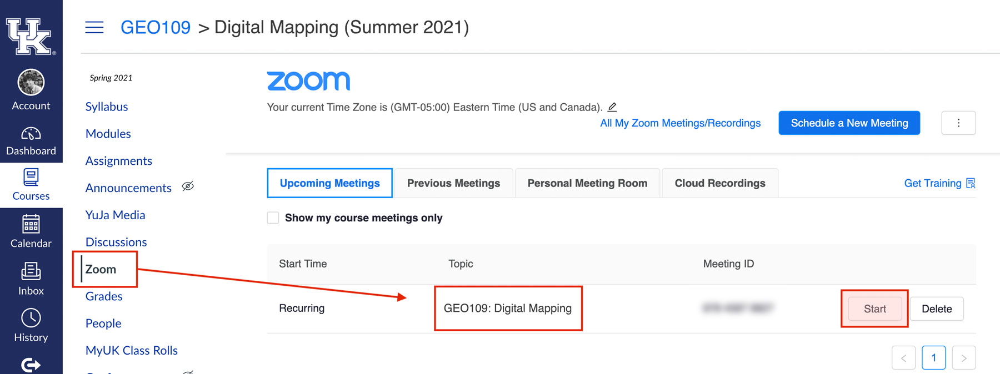

GEO 109 Syllabus
Department of Geography
The University of Kentucky, College of Arts and Sciences
August 22–December 14, 2023
Lecture on Tuesday/Thursday, 9:30–10:20 am
Instructor: Boyd Shearer
Locations (map)
Classroom: Chemistry-Physics Building, Room 139
Lab: White Hall Classroom Building, Room 311/313
Office: Patterson Office Tower, Room 805A
Office Hours: 1–2:30 pm Wednesday and 2–4 pm Thursday
Sections
…
Table of Contents
- GEO 109 Syllabus - Sections
Methods of Contact
Most of our interaction will occur during our scheduled lecture and lab time. However, if you need to meet outside of class, we have a few additional opportunities.
Office
During my office hours, you may visit my office without making an appointment. If you need to meet at a different time, please let me know a few days in advance so we can agree on a time. Alternatively, you may choose to schedule an online office hour via Zoom, which provides more flexibility in the times that we can meet, e.g., after 5 PM. Find the link to Zoom in the Canvas Zoom section. Click Join for the appropriate meeting.

Example Zoom meeting in the course navigation links
Forum
For general questions, please start by creating a new discussion in our Canvas Discussions section. If you find a post that you can help answer, please contribute.
Please follow these guidelines when posting to the discussion boards:
- Start a new discussion and include a detailed subject line.
- When replying, make sure you reply to the correct thread.
For pesonal questions about grades, accommodating missed assignments, or other issues, please contact your instructor(s) via the Canvas InBox. Do not send messages to my @uky.edu email address without prior approval. Canvas InBox creates an easily accessible record of our correspondence.
Course Description
Mapping is both art and science, and long considered unique to geography’s artistic, communicative, and scientific traditions. This course introduces concepts and techniques that enable mapping as a creative and artistic practice. We’ll examine the map’s centrality in everyday life and the changing role of the mapmaker as society becomes increasingly saturated by digital information technologies.
We also explore web mapping tools and location-based services and their relationship with traditional mapping technologies, like a Geographic Information System (GIS) and Global Navigation Satellite System (GNSS). The course introduces cartographic design, geovisualization, ethics of digital mapping, and map critique.
The course culminates in a series of maps created by you. 🚀 🗺
Course Goals and Objectives
In utilizing the creative process of digital mapping, we shall:
- Trace the technological developments and conceptual debates that situate contemporary digital mapping as art and creative practice;
- Explore the variety of digital mapping technologies available for creative and artistic representations of spatial phenomena;
- Create maps through digital processes using web and desktop software; and
- Critique existing digital maps and tools, as well as those creative works produced by your colleagues in the course.
Student Learning Outcomes
By the completion of this course, you shall be able to personally create maps that demonstrate an engagement with the creative and artistic processes of digital mapping, both as an individual and as part of a collaborative endeavor. As part of this process, you will:
- Apply principles of map design to create maps that are coherent and convincing as well as technically correct, choosing an appropriate representation for their data set or project goal;
- Situate contemporary digital mapping within technological developments and theoretical debates;
- Critique cartographic products and web mapping applications to assess some of their potential social, political, and aesthetic implications; and
- Evaluate results of your creative endeavors in class and discover how to reassess and refine your work.
Format
This course has two lectures and one lab each week that require dedicated participation. Lectures present our fundamental concepts and creative goals. Labs implement these concepts and goals through ‘hands-on’ software exercises, exploring digital mapping techniques, engaging in class discussions, and creating maps.
We have a number of field trips planned this semester.
Required resources
While there are no required books for this class, there will be assigned readings, videos, etc. which will be made available on Canvas. You are attending a research 1 university, taking classes with people who do original research. As such, you may have the opportunity to read journal articles, book chapters, and maps published by your professors. Professors are not paid royalties for these publications, but they are how information is disseminated for the academic community.
Software
Our computer lab has all of required software installed. If you would like this software installed on your computer, download and install the following free software:
- Desktop mapping: QGIS
- Web mapping: Mapbox Studio (runs in browser, just need free Mapbox account)
- Mobile mapping: Avenza Maps (runs on mobile device)
- Code and data editor: VS Code
Hardware
You are encouraged to have access to a mobile device (smartphone or tablet) with location services enabled for applications that we introduce in class. You are likely eligible to use an iPad for this course via UKy’s iPad Initiative.
Course Assignments and Grading
This course requires the completion of five labs, one exam & final project, and a variety of tasks and discussions. Grade requirements are weighted as detailed below:
Labs: Five labs @ 10% each
Midterm: 10%
Final Project: 20%
Tasks and discussions: 20%
Lab Topics
Completed labs will be submitted as a PDF, ZIP, or URL in Canvas. They should be submitted by 11:59 pm on the day that they are due.
1: Data
Create your first spatial data set.
2: GPS
Harness signals from space to find your way.
3: GIS
Analyze data to find patterns and relationships.
4: Cartography
Visualyze these patterns and relationships on a map…
5: Design
…and then make it fancy.
Midterm Exam
The first half of the semester explores how to create, manage, and visualize spatial data. This skill is a fundamental requirement to make maps and this exam will evaulate your knowledge of the three prior modules. The exam will be a take-home, online exam. You will have one week to complete the exam.
Tasks and Discussions
Throughout the semester, short tasks will be assigned and could serve as a prompt for class discussions. We will also have a few field trips that have a graded component. Some tasks and discussions will be announced only during lecture. Make it to class, do the tasks, and share your thoughts to receive full credit for this portion of your grade.
Final Project
You will create a map! Theme, format, and topic is wholly your choice. The exact specifications of the project will be addressed later in the semester. The general requirements of the project include:
- Proposal
- Map Draft
- Critique
- Refinement and Final Map
Grading scale and Rubric
When creating your lab submissions, think about these three dimensions of your work:
- Data design: does the data effectively represent the observed phenomena?
- Map design: is the map well-organized and have appropriate supporting content?
- Narrative design: what does the map communicate and is it engaging/persuasive?
Grade: A (90% to 100%) Excellent: You show a complete understanding of course materials and turn in assignments by the due date that are error-free, well-organized, and regularly show originality and creativity. Your participation in discussions is active, thoughtful, and helps to lead class learning.
Grade: B (80% to 89%) Good: You show a good grasp of key concepts within course materials and turn in the majority of work promptly that contains a few errors, but is organized and occasionally original and creative. Participation in discussions is active and contributes to ongoing conversations and work.
Grade: C (70% to 79%) Average: You show a basic understanding of key concepts within course materials and turn in work often late and contains some errors but meets the assignment goals. Work is rarely original and creative. Your participation in discussions and group work primarily contributes to established conversations and work.
Grade: D (60% to 69%) Insufficient: You show gaps in understanding of concepts within the course and fail to complete projects and exercises correctly and/or promptly. You have weak engagement in discussions.
Grade: E (below 60%) Failure: You show major gaps in understanding many concepts within the course and fail to complete projects and exercises correctly and timely. You do not engage in discussions.
Course Schedule
The schedule is preliminary. Any changes will be announced on Canvas and changed in this document.
| Lecture dates | Topic | Due |
|---|---|---|
| 1: Aug 22–24 | Introductions | Nothing! Explore Lex |
| 2: Aug 28–31 | Data | |
| 3: Sept 5–7 | Lab 1, Sept 10 | |
| 4: Sept 12–14 | GPS | |
| 5: Sept 19–21 | Lab 2, Sept 24 | |
| 6: Sept 26–28 | GIS | |
| 7: Oct 3–5 | Lab 3, Oct 8 | |
| 8: Oct 10–12 | Midterm (no lectures) |
Exam, Oct 15 |
| 9: Oct 17–19 | Cartography | |
| 10: Oct 26 | Lab 4, Oct 29 | |
| 11: Oct 31–Nov 2 | Design | |
| 12: Nov 7–9 | Lab 5, Nov 12 | |
| 13: Nov 14–16 | Final Project | |
| 14: Nov 21–23 | 🦃 (no lectures) |
|
| 15: Nov 28–30 | Final draft, Dec 3 | |
| 16: Dec 5 | Prep Days | |
| 17: Dec 14 | No exam nor class | Final project, Dec 14 |
Course Policies
Attendance Policy
You are expected to attend all classes, but attendance will not be recorded. Please note that you will not adequately complete course requirements without excellent attendance.
Collaboration
Collaboration on labs is allowed. If you collaborate, please observe the following expectations:
- Please acknowledge your collaborators in your submission; and
- Submit you assignment independently.
Submission of Assignments
All assignments must be submitted through Canvas by no later than 11:59 pm EDT on the day they are due (typically, Sunday). Eact submission dates for each assignment can found in the Course schedule section.
Late Assignments
One point will be deducted automatically for an unexcused late assignment, and one additional point will be deducted for every 72-hour period that the assignment is late after the submission date. Students with excused absences approved by the instructor will not be penalized. Late assignments submitted without an excused absence may not receive submission comments with the evaluation.
Excused Absences
Senate Rules 5.2.5.2.1 defines the following as acceptable reasons for excused absences:
- significant illness;
- death of a family member;
- trips for members of student organizations sponsored by an educational unit, trips for University classes, and trips for participation in intercollegiate athletic events;
- major religious holidays;
- interviews for graduate/professional school or full-time employment post-graduation; and
- other circumstances found to fit “reasonable cause for non-attendance” by the instructor of record.
Students should notify the professor of absences prior to class when possible. In addition to these policies, this course recognizes that a documented network or platform outage, e.g., Canvas not working, justifies an excused absence. Technical problems and scheduling conflicts also arise from time-to-time, and we recognize that assignments need to be turned in late. Please notify the instructor as soon as possible if you anticipate a late assignment to discuss a “reasonable cause for non-attendance” and justify an excused absence.
Withdraw/Incomplete Policy
Officially withdrawing from the class is required by the registrar to avoid a failing grade. The instructor will not withdraw you automatically because you quit attending class. The Schedule of Classes lists the date that a student may withdraw from the class at their discretion without a W and the date that they may still withdraw at their discretion but receive a W on their transcript for the course. Consult the university calendar to find the last date to drop a course without it appearing on the student’s transcript. After that date, students can withdraw or reduce course load after this date only for urgent non-academic reasons.
Course Material Copyright Statement
The University of Kentucky Code of Student Conduct defines Invasion of Privacy as using electronic or other devices to make a photographic, audio, or video record of any person without their prior knowledge or consent when such a recording is likely to cause injury or distress.
All video and audio recordings of lectures and class meetings, provided by the instructors, are for educational use by students in this class only. They are available only through the Canvas shell for this course and cannot be copied, shared, or redistributed.
As addressed in the Student Code of Conduct, students are expected to follow appropriate university policies and maintain the security of linkblue accounts used to access recorded class materials. Recordings may not be reproduced, shared with those not enrolled in the class, or uploaded to other online environments.
If the instructor or a University of Kentucky office plans any other uses for the recordings, beyond this class, students identifiable in the recordings will be notified to request consent before such use. In anticipation of such cases, students may be asked to complete an “authorization of use” form by a faculty member.
Video and audio recordings by students are not permitted during the class unless the student has received prior permission from the instructor. Any sharing, distribution, and or uploading of these recordings outside of the parameters of the class is prohibited. Students with specific recording accommodations approved by the Disability Resource Center should present their official documentation to the instructor.
All content for this course, including handouts, assignments, and lectures, is the instructors’ intellectual property and cannot be reproduced or sold without prior permission from the instructors. A student may use the material for reasonable educational and professional purposes extending beyond this class, such as studying for a comprehensive or qualifying examination in a degree program, preparing for a professional or certification examination, or to assist in fulfilling responsibilities at a job or internship.
Class Behavior and Civility
All participants in this course should maintain the highest standards of academic, professional, and personal integrity and support a safe and inclusive learning environment (see the section on non-discrimination). With an understanding of mutual respect and civil discourse, we cultivate an online environment free from:
- emotional harm, hostility, and excessive persuasion;
- disturbances that interfere with course instruction and learning;
- content that degrades an individual or group.
The instructor reserves the right to stop and remove content (Zoom meetings, discussion posts, etc.) that conflicts with the above statement.
Chosen Names and Personal Pronouns
Everyone has the right to be addressed by the name and pronouns that correspond to their gender identity, including non-binary pronouns, for example, they/them/theirs, ze/zir/zirs, etc. Course rosters may not list gender or pronouns, so you may be asked to indicate the pronouns you use so that the instructor does not make assumptions based on your name and/or appearance/self-presentation (you are not obligated to do so). If you use a chosen name, please let the instructor know. Chosen names and pronouns are to be respected at all times in this course. Mistakes in addressing one another may happen, so we should encourage openness to correction and learning. Chosen names and personal pronouns may evolve, so if at any point during the semester you would like to be addressed differently, please let the instructor know.
Late Assignments—Verification of Absences
(Senate Rules 5.2.5.2.1)
Students may be asked to verify their absences for them to be considered excused. Senate Rule 5.2.5.2.1 states that faculty have the right to request appropriate verification when students claim an excused absence due to: significant illness; death in the household, trips for classes, trips sponsored by an educational unit, and trips for participation related to intercollegiate athletic events; and interviews for full-time job opportunities after graduation and interviews for graduate and professional school. (Appropriate notification of absences due to University-related trips is required before the absence when feasible and in no case more than one week after the absence.)
Late Assignments—Religious Observances
(Senate Rules 5.2.5.2.1(4))
Students anticipating an absence for a major religious holiday are responsible for notifying the instructor in writing of anticipated absences due to their observance of such holidays. Please notify the instructor two weeks before the absence. Information regarding major religious holidays may be obtained through the Ombud’s website or by calling 859-257-3737.
Late Assignments—Make-Up Work
(Senate Rule 5.2.5.2.2)
Except where prior notification is required, students missing any graded work due to an excused absence are responsible:
for informing the Instructor of Record about their excused absence within one week following the period of the excused absence; and for making up the missed work. The instructor must give the student an opportunity to make up the work and/or the exams missed due to the excused absence, and shall do so, if feasible, during the semester in which the absence occurred. The instructor shall provide the student with an opportunity to make up the graded work and may not simply calculate the student’s grade on the basis of the other course requirements unless the student agrees in writing.
For students who add a class after the first day of classes and miss graded work, the instructor shall provide the student with an opportunity to make up the graded work. The instructor may not simply calculate the student’s grade on the basis of the other course requirements unless the student agrees in writing.
Late Assignments—Excused Absences and W/I, All Students
(Senate Rule 5.2.5.2.3.1)
If a student has excused absences for more than one-fifth of the required course interactions (e.g., submitting assignments), the student can request a “W.” If the student declines a “W,” the Instructor of Record may award an “I” for the course.
Late Assignments—Excused Absences Due to Military Duties
(Senate Rule 5.2.5.2.3.2)
If a student must be absent for one-fifth or less of the required course interactions (e.g., submitting assignments) due to military duties, the following procedure applies:
Once a student is aware of a call to duty, the student shall provide a copy of the military orders to the Director of the Veterans Resource Center. The student shall also provide the Director with a list of her/his courses and instructors. The Director will verify the orders with the appropriate military authority and, on behalf of the military student, notify each Instructor of Record via Department Letterhead as to the known extent of the absence. The Instructor of Record shall not penalize the student’s absence in any way and shall provide accommodations and time frames so that the student can make up missed assignments, quizzes, and tests in a mutually agreed-upon manner.
Academic Integrity—Prohibition on Plagiarism
(Senate Rules 6.3.1)
Please note that any textual content that you add to the map should be in your own words or properly cited if you are using someone else’s words or content (see the section on plagiarism).
Per University policy, students shall not plagiarize, cheat, or falsify or misuse academic records. Students are expected to adhere to University policy on cheating and plagiarism in all courses. The minimum penalty for a first offense is a zero on the assignment on which the offense occurred. If the offense is considered severe or the student has other academic offenses on their record, more serious penalties, up to suspension from the University, may be imposed.
Plagiarism and cheating are serious breaches of academic conduct. Each student is advised to become familiar with the various forms of academic dishonesty, as explained in the Code of Student Rights and Responsibilities . Complete information can be found on the Academic Ombud page. A plea of ignorance is not acceptable as a defense against the charge of academic dishonesty. It is important that you review this information as all ideas borrowed from others need to be properly credited.
Senate Rule 6.3.1 (see current Senate Rules ) states that all academic work, written or otherwise, submitted by students to their instructors or other academic supervisors, is expected to be the result of their own thought, research, or self-expression. In cases where students feel unsure about a question of plagiarism involving their work, they are obliged to consult their instructors on the matter before submission.
When students submit work purporting to be their own, but which in any way borrows ideas, organization, wording, or content from another source without appropriate acknowledgment of the fact, the students are guilty of plagiarism.
Plagiarism includes reproducing someone else’s work (including, but not limited to, a published article, a book, a website, computer code, or a paper from a friend) without clear attribution. Plagiarism also includes the practice of employing or allowing another person to alter or revise the work which a student submits as his/her own, whoever that other person may be, except under specific circumstances (e.g., Writing Center review or peer review) allowed by the Instructor of Record or that person’s designee. Plagiarism may also include double submission, self-plagiarism, or unauthorized resubmission of one’s own work, as defined by the instructor.
Students may discuss assignments among themselves or with an instructor or tutor, except where prohibited by the Instructor of Record (e.g., individual take-home exams). However, the actual work must be done by the student, and the student alone, unless collaboration is allowed by the Instructor of Record (e.g., group projects).
When a student’s assignment involves research in outside sources or information, the student must carefully acknowledge exactly what, where, and how he/she has employed them. If the words of someone else are used, the student must put quotation marks around the passage in question and add an appropriate indication of its origin. Making simple changes while leaving the organization, content, and phraseology intact is plagiaristic. However, nothing in these Rules shall apply to those ideas, which are so generally and freely circulated as to be a part of the public domain.
Please note that any assignment you turn in may be submitted to an electronic database to check for plagiarism.
Academic Integrity—Prohibition on Cheating
(Senate Rules 6.3.2)
Cheating is defined by its general usage. It includes, but is not limited to, the wrongfully giving, taking, or presenting any information or material by a student with the intent of aiding himself/herself or another on any academic work which is considered in any way in the determination of the final grade. The fact that a student could not have benefited from an action is not by itself proof that the action does not constitute cheating. Any question of definition shall be referred to the University Appeals Board.
Academic Integrity–Prohibition on Falsification/Misuse of Academic Records
(SR 6.3.3)
Maintaining the integrity, accuracy, and appropriate privacy of student academic records is an essential administrative function of the University and the basic protection of all students. Accordingly, the actual or attempted falsification, theft, misrepresentation, or other alteration or misuse of any official academic record of the University, specifically including knowingly having unauthorized access to such records or the unauthorized disclosure of information contained in such records, is a serious academic offense. As used in this context, “academic record” includes all paper and electronic versions of the partial or complete permanent academic record, all official and unofficial academic transcripts, application documents and admission credentials, and all academic record transaction documents. The minimum sanction for falsification, including the omission of information, or attempted falsification, or other misuses of academic records as described in this section is suspension for one semester.
“Multiple Final Exams” Information
University Senate Rule 5.2.4.7. “Any student with more than two final examinations scheduled on any one date shall be entitled to have the examination for the class with the highest catalog number rescheduled at another time during the final examination period. In case this highest number is shared by more than one course, the one whose departmental prefix is first alphabetically will be rescheduled. The option to reschedule must be exercised in writing to the appropriate Instructor of Record or his/her designee two weeks before the last class meeting.”
Accommodations
If you have a documented disability requiring academic accommodations, please notify the instructor as soon as possible during scheduled office hours. To receive accommodations in this course, you must provide the instructor with a Letter of Accommodation from the Disability Resource Center (DRC). The DRC coordinates campus disability services available to students with disabilities. Visit the DRC website, contact them by phone at (859) 257-2754, or visit their office on the corner of Rose Street and Huguelet Drive in the Multidisciplinary Science Building, Suite 407. http://www.uky.edu/DisabilityResourceCenter
Policy on non-discrimination
UK is committed to providing a safe learning, living, and working environment for all members of the University community. The University maintains a comprehensive program that protects all members from discrimination, harassment, and sexual misconduct. For complete information about UK’s prohibition on discrimination and harassment on aspects such as race, color, ethnic origin, national origin, creed, religion, political belief, sex, and sexual orientation, please see the electronic version of UK’s Administrative Regulation 6:1 (“Policy on Discrimination and Harassment”). https://www.uky.edu/regs/sites/www.uky.edu.regs/files/files/ar/ar6-1.pdf
In accordance with Title IX of the Education Amendments of 1972, the University prohibits discrimination and harassment on the basis of sex in academics, employment, and all of its programs and activities. Sexual misconduct is a form of sexual harassment in which one act is severe enough to create a hostile environment based on sex and is prohibited between members of the University community and shall not be tolerated. For more details, please see the electronic version of Administrative Regulations 6:2 (“Policy and Procedures for Addressing and Resolving Allegations of Sexual Assault, Stalking, Dating Violence, Domestic Violence, and Sexual Exploitation”). Complaints regarding violations of University policies on discrimination, harassment, and sexual misconduct are handled by the Office of Institutional Equity and Equal Opportunity (IEEO), which is located in 13 Main Building and can be reached by phone at (859) 257-8927.
You can also visit the IEEO’s website.
Faculty members are obligated to forward any report made by a student related to IEEO matters to the Office of Institutional Equity and Equal Opportunity. Students can confidentially report alleged incidences through the Violence Intervention and Prevention Center, Counseling Center, or University Health Services.
Campus Resources for Your Success
The Department of Geography and your instructor want you to succeed in your studies and have the best experience at the University of Kentucky. Sometimes circumstances make it difficult. Learn resources that can help you overcome challenges and understand that you are part of a greater, inclusive, and safe community.
Bias Incident Support Services
Bias Incident Support Services (BISS) provides confidential support and advocacy for any student, staff, or faculty member impacted by bias, hatred, and/or an act of identity-based violence. BISS staff aid impacted parties in accessing campus and community resources, including the Bias Incident Response Team, the University’s official reporting system for acts that negatively impact a sense of belonging. Campus and community consultation and educational opportunities centered on inclusion, diversity, equity, and belonging is a resource also provided by BISS. For more detailed information, please visit the BISS website or contact them via email.
http://www.uky.edu/biss biss@uky.edu
Counseling Center
The UK Counseling Center (UKCC) provides a range of confidential psychological services and consultation to members of the UK community (students, faculty, staff, administrators, parents, concerned others). Please visit the website https://www.uky.edu/counselingcenter/ for more detailed information, or call 859-257-8701.
Martin Luther King Center
The Martin Luther King Center (MLKC) supports an inclusive learning environment where diversity and individual differences are understood, respected, and appreciated as sources of strength. The MLKC’s year-round programs and activities that focus on the importance of cultural awareness and cross-cultural understanding support its three primary goals: 1) sponsoring cultural and educational programming; 2) offering opportunities for student support and development; and 3) through programmatic linkages with a wide variety of civic and community agencies, promoting community outreach, engagement, and collaboration. Students can reach the MLKC via phone at (859) 257-4130, by visiting them in Gatton Student Center Suite A230, via email, and by visiting the MLKC website.
http://www.uky.edu/mlkc/ | mlkc@uky.edu
Office of LGBTQ* Resources
UK is committed to supporting students and upholding the University’s efforts to promote inclusion among our community. UK faculty and staff employees support inclusion and diversity throughout the University, including how faculty structure classroom conversations and manage those dynamics. To assist in these efforts, students are welcome to provide the names and pronouns they prefer. One easy way to do this is by using the pronoun feature of UK’s Name Change Form. Otherwise, students can provide this information to faculty members directly.
Discrimination based on sexual orientation, gender expression, and gender identity is prohibited at UK. If you have questions about support, advocacy, and community-building services related to sexual orientation, gender expression, or gender identity, students are encouraged to visit the website of the Office of LGBTQ* Resources.
http://www.uky.edu/lgbtq/forms-and-resources
Veteran’s Resource Center & Protocol for Short-Term Military Absences
Being both a member of the military community and a student can bring some complexities. If you are a military member or a military veteran, or a dependent, please let me know when these challenges arise. Drill schedules, calls to active duty, mandatory training exercises, issues with GI Bill disbursement, etc., can complicate your academic life. Let me know if you experience complications, and I will do my best to work with you.
The Veteran’s Resource Center (VRC) is a great resource for members of our military family. If you have questions regarding your VA benefits or other related issues, the VRC has a full complement of staff to assist you. The VRC also provides study and lounge space, as well as free printing. Please visit the VRC websiteLinks to an external site., email the VRC, visit them in the basement of Erikson Hall, or call the director, Colonel Tony Dotson, at (859) 257-1148.
If you are a military student serving in the National Guard or Reserve, it is in your best interest to let all of your professors know that immediately. You might also consider sharing a copy of your training schedule.
https://www.uky.edu/veterans | vetcenter@uky.edu
If you are a military student who is a member of the National Guard or Military Reserve and are called to duty for one-fifth or less of this semester, please help me help you! Once you become aware of the call to duty, provide a copy of your military orders to the Director of the Veterans Resource Center (contact information above). (Please also provide the Director with a list of all your current courses and instructors.) The Director will verify the orders with the appropriate military authority and, on your behalf, will notify your instructors as to the known extent of the absence.
Violence Intervention and Prevention (VIP) Center
If you experience an incident of sex- or gender-based discrimination or interpersonal violence, we encourage you to report it. While you may talk to a faculty member or TA/RA/GA, understand that as a “Responsible Employee” of the University, these individuals MUST report any acts of violence (including verbal bullying and sexual harassment) to the University’s Title IX Coordinator in the IEEO Office. If you would like to speak with someone who may be able to afford you confidentiality, you can visit the Violence Intervention and Prevention (VIP) Center’s website (offices located in Frazee Hall, lower level; email them, or call 859-257-3574), the Counseling Center’s (CC) website, and the University Health Services (UHS) website. The VIP Center, CC, and UHS are confidential resources on campus. The VIP Center accepts walk-in appointments.
https://www.uky.edu/vipcenter/content/faq | vipcenter@uky.edu
http://www.uky.edu/counselingcenter/student-resources
https://ukhealthcare.uky.edu/university-health-service/student-health/our-student-services
An extended listing of campus resources
Academic Coaching
https://www.uky.edu/presentationU/academic-coaching
The Study Central (basement of Donovan), The Study North (Hub at Young Library), and Presentation U! @ The Hub
Meet with an Academic Coach to develop an individualized plan to meet your goals this semester. They will work with you one-on-one to determine your strengths, weaknesses, and help you reach your goals this semester.
The Academic Exploration Tool
The Academic Exploration Tool (AET) helps unlock your potential, taking your passions, interests, and career aspirations and connecting you with UK majors that suit your goals. With AET, explore the many majors offered at UK!
Academic Ombud
109 Bradley Hall
It helps students work through and resolve academic problems and conflicts. Stop by Bradley Hall, call 257-3737 or email Ombud@uky.edu with questions.
Academic Scholarships
http://www.uky.edu/financialaid/scholarships
Information and applications for University and departmental scholarships available on their website.
Basic Needs
https://www.uky.edu/basicneeds/
A central site for locating resources across campus to assist students with needs related to all four components of student success: academic success, wellness, finances, and belonging. Any student who faces challenges securing their food or housing and believes this may affect their performance in the course is urged to contact the Dean of Students for support.
Big Blue Pantry
http://www.ukcco.org/programs/bigbluepantry/
Rooms 23 and 25, Whitehall Classroom Building (in the basement)
The Big Blue Pantry serves UK students who are experiencing food insecurity or hunger. Any UK student with a valid UK ID, is eligible to receive non-perishable goods from the Big Blue Pantry by coming to White Hall 23-25 during our open hours. If our hours don’t fit your schedule, email us at bigbluepantry@ukcco.org to set up an appointment!
Biology Learning Center
https://bio.as.uky.edu/biology-tutors
143 Jacobs Science Building (JSB)
The Biology Learning Center is located in JSB 143 and is open to any student needing help with any biology course required for the major. All help is provided by undergraduate assistants on a drop-in basis. Visit the website for more information.
Calendar of Events
http://calendar.uky.edu/MasterCalendar.aspx
Visit this website to find out about everything happening across campus.
Career Center
https://www.uky.edu/careercenter/students
Stuckert Career Center. Offers appointments with a Career Advisor or Major Exploratory Associate who assist students in being career-ready for today’s diverse job market.
408 Rose Street 859-257-2746
Center for Academic Resources and Enrichment Services (CARES)
104 McVey Hall
The overall program goals are to increase the retention and graduation rates of students traditionally underrepresented in post-secondary education, including African Americans, Latinos, and Native Americans. Services include tutoring, study groups, academic planning/monitoring, career exploration, and networking opportunities, personal development workshops, graduate school information/preparation. Call (859) 323-6347, follow on Twitter @UK_CARES, or Facebook.
Collegiate Recovery Community
https://www.uky.edu/recwell/wellness/CRC
103 Frazee Hall
The University of Kentucky’s Collegiate Recovery Community is dedicated to empowering students recovering from addictive disorders to achieve academic, personal, and professional success while maintaining recovery. The CRC provides a safe and supportive community for students in recovery, including a positive social atmosphere with like-minded peers, dedicated and qualified recovery staff, and an emphasis on developing as productive members of society. (859) 323-5981
Counseling Center
http://www.uky.edu/counselingcenter
106 Frazee Hall
Provides academic, personal, and career counseling; free and confidential; call (859) 257-8701 to schedule an appointment or visit their walk-in hours (Monday, Thursday, Friday 9 am-3 pm and Tuesday & Wednesday noon - 3 pm). Open 8 a.m. to 4:30 p.m. Monday-Friday. Like them on Facebook, and follow on Twitter @UKCounselingCtr.
Disability Resource Center
www.uky.edu/DisabilityResourceCenter
407 Multidisciplinary Science Building
Students with documented physical, learning, or temporary disabilities may receive assistance and support from this office. Call (859) 257-2754 or email drc@uky.edu for more information.
Education Abroad & Exchanges
www.uky.edu/international/educationabroad
310 Bradley Hall
There are hundreds of programs to match every academic interest and budget; make an appointment, and they’ll tell you everything you need to know. For more information, visit their website, call (859) 323-2106, or e-mail them at EducationAbroad@uky.edu. Like them on Facebook and follow on Instagram @ukyabroad
Financial Ombud Services
www.uky.edu/financialaid/financial-ombud-services
10 Funkhouser
The Financial Ombud works 1-on-1 with students/parents to identify/resolve financial problems affecting payment of tuition & fees and enrollment. Contact Holly Sandlin, Financial Ombud, at (859) 218-1360, or email Financialombud@lsv.uky.edu.
First-generation Student Advising
https://www.uky.edu/firstgeneration/about-us
230 McVey Hall
First-Generation Student Advising supports first-generation students at the University of Kentucky from recruitment to graduation through research-based programs, resources, best practices, and campus-wide advocacy about the needs of students who are the first in their families to go to college. Advisors advocate for first-generation students within their colleges and collaborate with other campus offices (e.g., Division of Student and Academic Life, Enrollment Management, International Center, and Office for Institutional Diversity) to provide the best resources to promote the success of first-generation students at UK.
Gatton LEAP (Lab for Economics & Accounting Proficiency)
http://gatton.uky.edu/programs/undergraduate/student-success/lab-economics-accounting-proficiency
Gatton Business & Economics Building (Accounting: Room 247, 249, and 253, Economics: Room 251)
LEAP provides free tutoring services for students enrolled in ACC 201, ACC 202, ACC 301, ECO 201, ECO 202, and ECO 391 at the University of Kentucky. LEAP is operated by the Gatton College of Business & Economics. See the website for hours.
General Chemistry Learning Center
http://chem.as.uky.edu/general-chemistry-learning-center
219 Jacobs Science Bldg (JSB)
Receive help from chemistry graduate students for 100-level chemistry courses. Open Monday – Thursday from 9 a.m. until 5 p.m. and on Friday from 9 a.m. until 4 p.m.
The Hub
Basement of Young Library
Comfortable place to study; helpful reference librarians; technology support; Writing Center; computer labs; vending food.
International Center
https://international.uky.edu/
International Student & Scholar Services provides several services for current international students, including support and information about student employment, health coverage, etc. ISSS provides immigration advising which allows international students to achieve their academic, professional, and research goals. By facilitating cross-cultural connections, we create opportunities to develop a sense of belonging at UK.
Kentucky Wildcab
http://uksga.org/wildcab/ and http://www.uky.edu/transportation/buses-and-shuttles_kentucky-wildcab
Kentucky Wildcab is a free, late-night on-demand transportation resource for UK students primarily designed to provide a free ride home to UK students and their guests while promoting responsible and safe late night transportation decisions (Thursday, Friday, and Saturday from 10 pm to 3 am). Rides may be requested using the Transloc Rider mobile app on your smartphone or online. You can access this app through Google Play or the App Store, as well as through the GoSafe option on our LiveSafe app. For assistance during business hours, call (859) 323-RIDE (323-7433).
Martin Luther King Center
www.uky.edu/MLKC Gatton Student Center
Strives to achieve a more diverse and inclusive environment, increase retention of students generally underrepresented in the student body, and enhance student achievement. Serves campus by exposing students, faculty, and staff to cultural, educational, and social activities. Visit the website for more information, or call (859) 257-4130.
Mathskeller
https://math.as.uky.edu/mathskeller
63 Classroom Building (Basement)
Open 9 a.m. to 5 p.m., Monday – Friday. Offers free tutoring and help with 100-level math classes.
MoneyCats
http://www.uky.edu/financialwellness/moneycats-team
302 Patterson Hall
Provides financial wellness education, resources, and 1:1 financial coaching to students enrolled at the University of Kentucky. Contact them by email at moneycats@uky.edu.
National Student Exchange Program
http://www.uky.edu/international/NSE
Education Abroad and Exchanges Office, Third Floor, Bradley Hall
Attend one of nearly 200 colleges and universities throughout the U.S., Guam, Puerto Rico, the U.S. Virgin Islands, and Canada, and pay only UK tuition. Call (859) 257-4067 or email nse@uky.edu to learn more.
Off-Campus Student Advising
230 McVey Hall
Off-Campus Student Advising fosters and enhances the off-campus student experience through education, advocacy, and involvement. The Off-Campus Advisor helps students strengthen their connection to campus and navigate obstacles that emerge from living off-campus. Off-Campus Student Advising works directly with students and their academic advisors while also collaborating with other campus offices (e.g., Division of Student and Academic Life, Enrollment Management, International Center, and Office for Institutional Diversity) to provide the best resources to promote the success of off-campus students at UK.
Organic Chemistry Learning Center
https://chem.as.uky.edu/organic-chemistry-learning-center
331 Jacobs Science Bldg. (JSB)
Receive help from chemistry graduate students for introductory organic chemistry classes. Open Monday – Thursday from 9 am – 5 pm and on Friday from 9 am – 4 pm.
Presentation U! @ The Hub
Presentation U! @ eStudio in FPAT
http://www.uky.edu/presentationU
The Hub at Young Library and F. Paul Anderson Tower (FPAT)
Free peer tutoring in composition and communication assignments (speeches, papers, group presentations, visual, and digital projects. Schedule a face-to-face or online tutoring appointment!
SAFECATS
www.uky.edu/Police/escort.html
SAFECATS provides free safety escort service on campus from 8:30 p.m. –1:30 a.m. Sun – Thurs. Call 257-SAFE (7233) for both services. Hearing-impaired students may request a SAFECATS escort by e-mailing SAFECATS at uksafecats@uky.edu.
Stuckert Career Center
408 Rose Street
Receive help with career exploration, resumes, internships, and job search. Open Monday – Friday from 8 a.m. until 5 p.m. Visit their website, call (859) 257-2746, or e-mail at ukcareercenter@uky.edu. Like them on Facebook and follow on Twitter @UKCareerCenter.
Student Employment Office
112 Scovell Hall
Helps students find jobs on and off-campus, visit the website to get started, or call (859) 257-9555 for more information.
Student Financial Aid
127 Funkhouser Building
(859)257-3172
Assists students with the financial aid application process, responsible for the awarding and disbursement of federal, state, and institutional grants, loans, and scholarships.
Student Support Services
Suite 443, Multidisciplinary Science Bldg. (MDSB), 725 Rose St.
Provides a holistic approach to working with students who are first-generation, low income, or have a documented disability. Services include but are not limited to the following: tutoring, mentoring, and limited computer use. You must come in and complete an application to receive services. Visit the website or call (859) 257-9797 for more information.
The Study Central & The Study North
www.uky.edu/AE or e-mail thestudy@uky.edu
Central – Basement of Donovan Hall North -First floor Jewell Hall
Free, drop-in peer tutoring in 40+ courses. Follow on social media @TheStudyScoop
Undergraduate Research
211 Funkhouser
Promotes high quality undergraduate student-faculty collaborative research and scholarship in all disciplines across campus. For more information, call (859) 257-6322, like them on Facebook, and follow on Twitter @UKUGR.
University Health Service
http://ukhealthcare.uky.edu/uhs
830 South Limestone
If you’re sick, this is the place to go. Full-time UK students see clinicians without charge, after paying the mandatory Health Fee. To make an appointment, call (859) 323-2778 (APPT).
Wildcat Wardrobe
Wildcat Wardrobe is a collaboration between UK Student Government Association and the Stuckert Career Center. Students can access gently used professional clothing for job interviews or internships. Wildcat Wardrobe has drop-in hours Mondays and Wednesdays from 2-4 pm.
Robert E. Hemenway Writing Center
https://wrd.as.uky.edu/writing-center
B108B Young Library, in The Hub
Graduate and undergraduate student peer consultants assist with composing and communicating in all media, including essays, reports, posters, visuals, websites, slide presentations, and videos. Open Monday-Thursday from 10 a.m. – 9 p.m.; Friday from 10 a.m. – 3 p.m.; and Sunday (online only) from 7 p.m. – 10 p.m. Make appointments online (https://uky.mywconline.com/ ) or drop by or call (859) 257-1368.
About the Department of Geography
Located in Lexington, Kentucky, the Department of Geography at the University of Kentucky was established in 1944. The department is consistently ranked among leading geography graduate programs in the United States. Our department would make a great home for your major or minor in Geography and all things spatial!
https://en.wikipedia.org/wiki/Department_of_Geography,_University_of_Kentucky

We're wildly spatial, y'all!
.